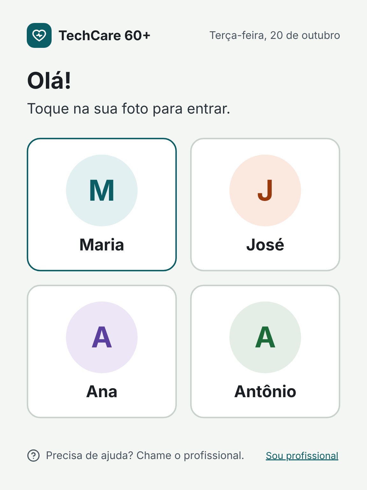
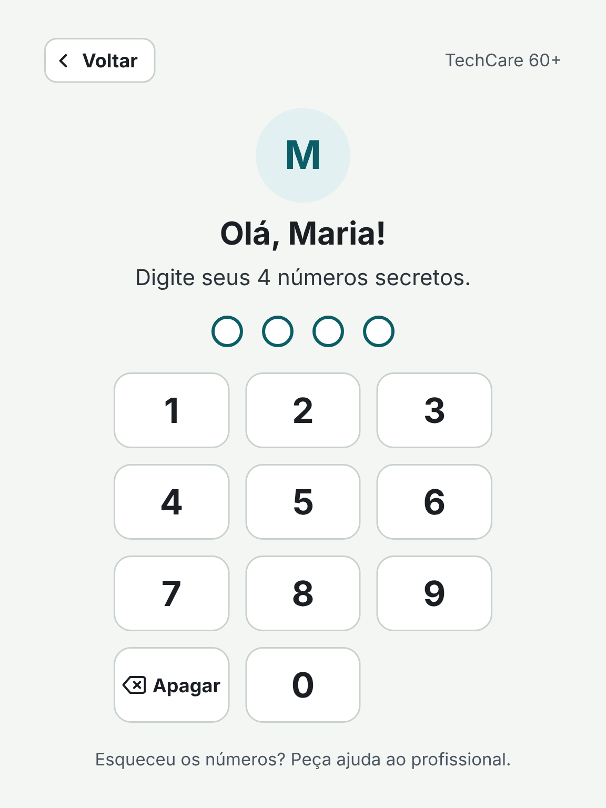
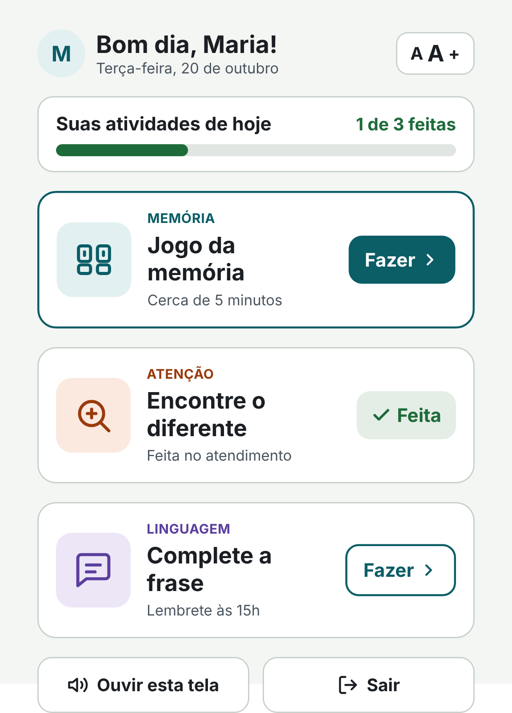
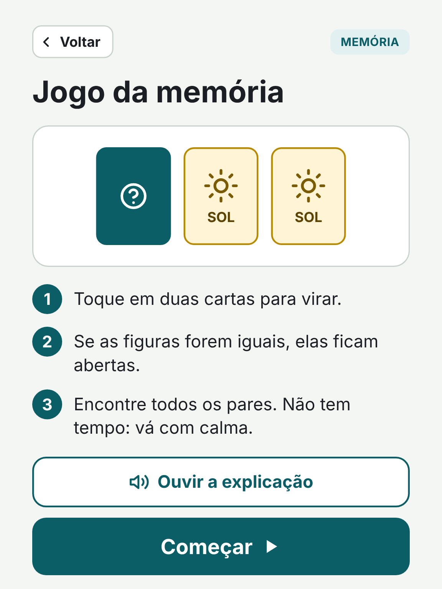
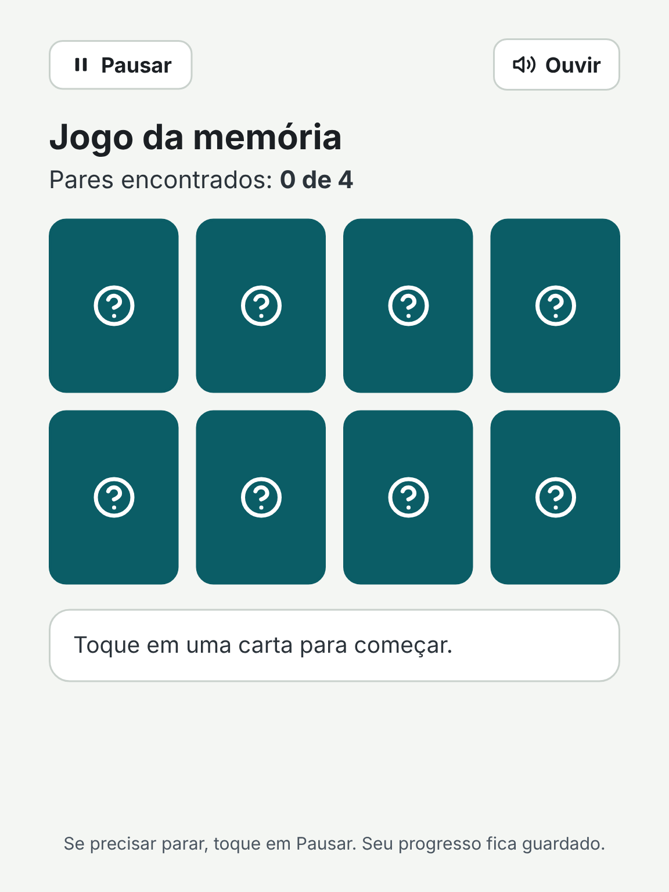
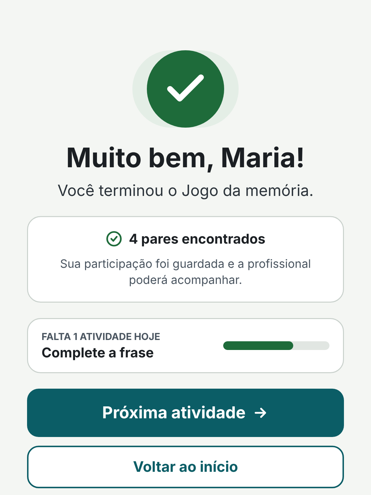
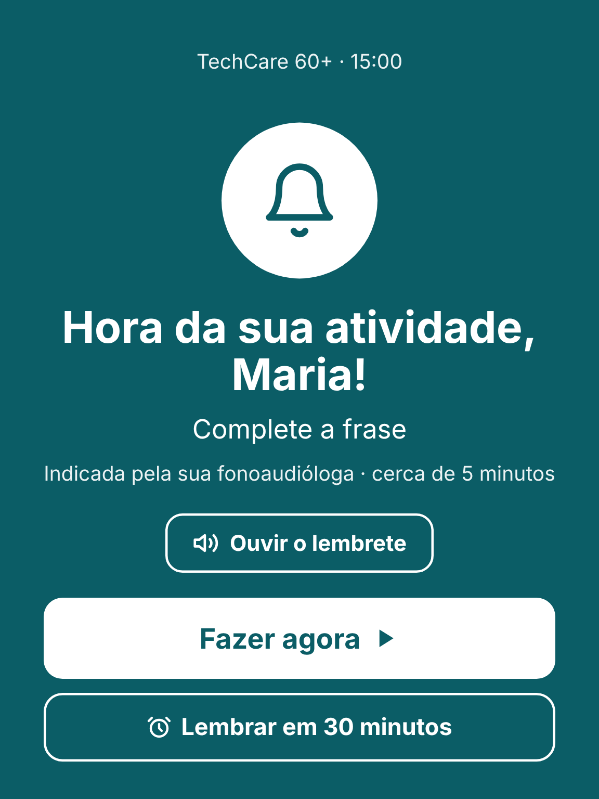

App da pessoa idosa (tablet)
Comece pela Tela 1. O PIN aceita quaisquer 4 números e o jogo da memória é jogável.

Tela 1Idoso – Escolher perfil
Tela 2Idoso – Digitar PIN
Tela 3Idoso – Atividades de hoje
Tela 4Idoso – Instruções
Tela 5Idoso – Jogo da memória
Tela 6Idoso – Atividade concluída
Tela 7Idoso – LembreteÁrea do profissional (web)
Login, idosos em acompanhamento, perfil com acessibilidade e consentimento, plano de atividades e evolução.